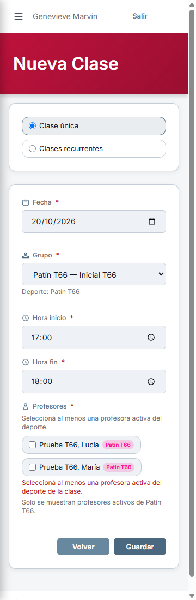
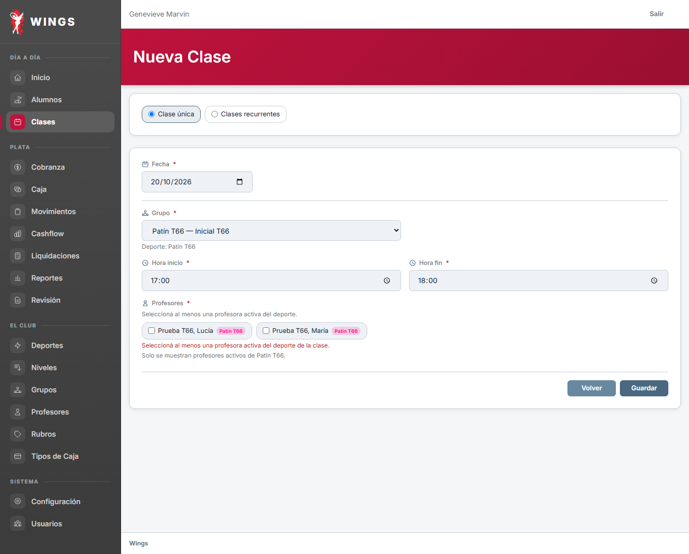
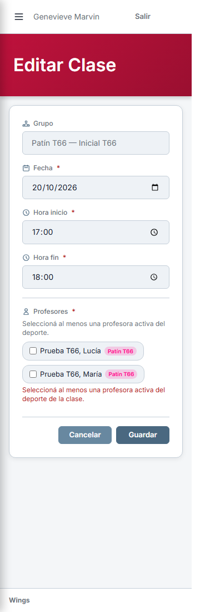
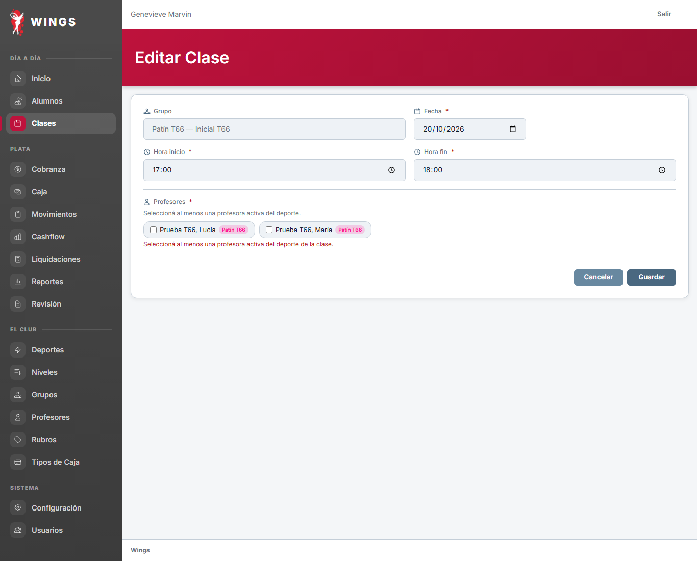
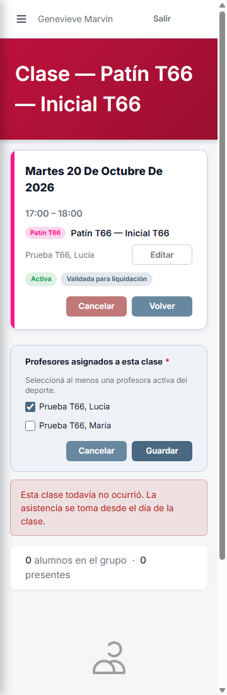
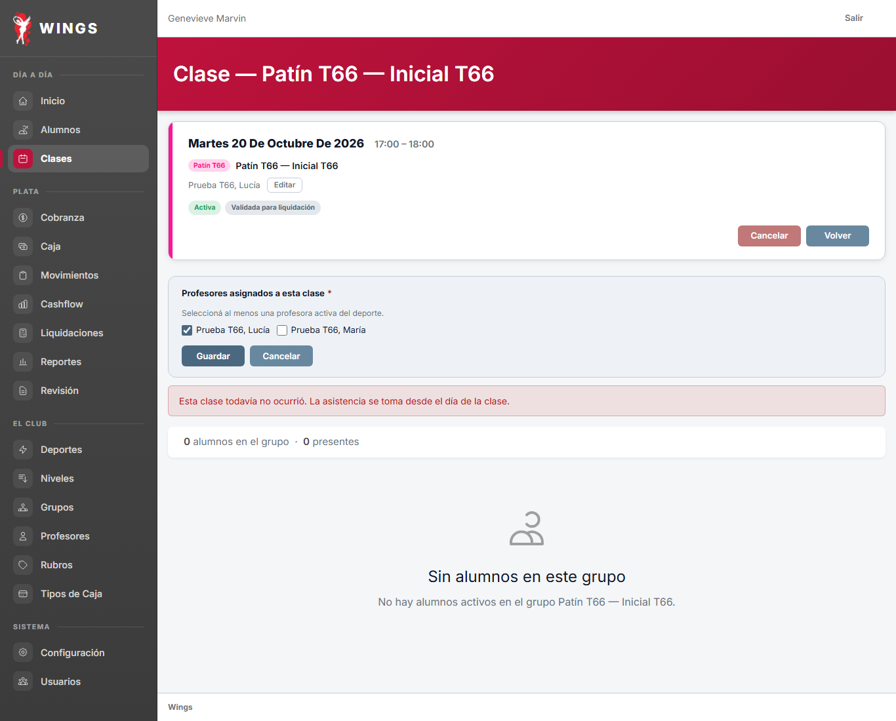

T66 — Al menos una profesora
Respuestas reales de Wings con datos sintéticos. Celular dentro de marco a ancho real. Aspecto pendiente de aprobación de Carlos.
Nueva clase: error y datos conservados
Profesora obligatoria, explicación y mensaje de rechazo junto a la selección.



Escritorio · 1366

Editar clase: no permite vaciar profesoras



Escritorio · 1366

Cambiar profesoras desde la ficha
Panel abierto mediante el botón real. La obligatoriedad también se controla en el servidor.



Escritorio · 1366

Control del método: Ingreso a 360. Informe de implementación.